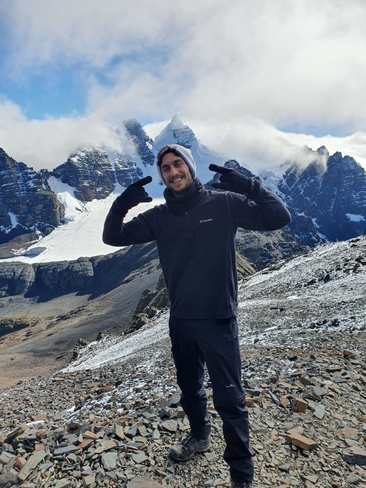
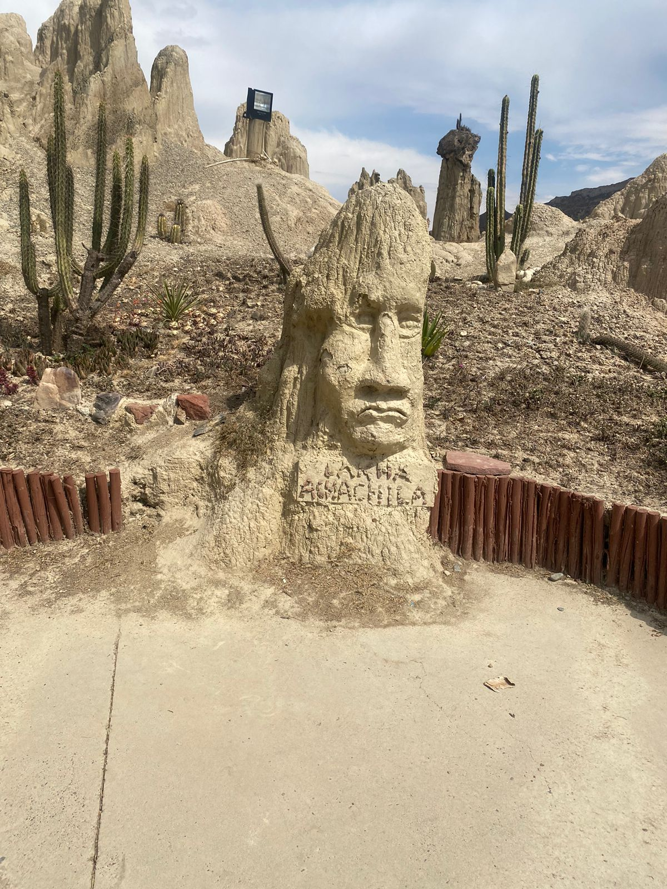
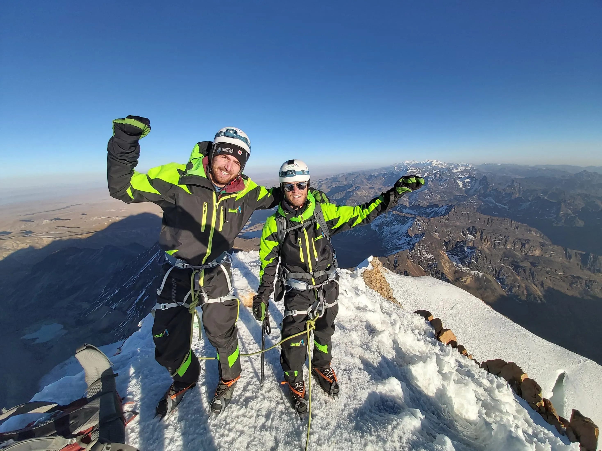

Salidas privadas y rutas a medida.
Bolivia / trekking / climbing
Base en La Paz
Bolivia se recuerda mejor con una ruta bien pensada.
Over Limit Adventure diseña trekking, climbing y salidas privadas con guiado local, logística clara y una experiencia seria desde el primer mensaje.
Operación local con base real en La Paz.
Acompañamiento claro antes, durante y después.
Señales claras
La experiencia empieza antes de la caminata: una buena operación hace que todo se sienta más simple, más seguro y mejor contado.
Cómo se vive
Una aventura sólida se siente distinta antes de salir.
La diferencia no está solo en la montaña, sino en cómo se construye el recorrido: tiempos realistas, exigencia bien calibrada y rutas con identidad propia.
Buscamos rutas con presencia, no paquetes que solo cambian de foto.
Trekking, climbing y salidas privadas comparten la misma lógica: menos fricción, mejor estructura y una experiencia con carácter sin perder criterio técnico.
La exigencia física se ajusta al grupo para que la ruta se disfrute sin improvisación.
Elegimos recorridos con identidad visual fuerte y una narrativa clara de principio a fin.
Trabajamos salidas privadas, progresiones técnicas y experiencias adaptadas a fechas concretas.

Trekking
Cordillera real para caminar con amplitud, ritmo y paisaje.
Travesías con lagunas, pasos altos y recorridos que hacen sentir la montaña completa.

Climbing
Ascensos con técnica clara, seguridad real y preparación previa.
Programas pensados para progresar con confianza, desde jornadas de adaptación hasta cumbres icónicas.

Privadas
Rutas a medida para viajeros que quieren una experiencia más personal.
Salidas que mezclan geografía extrema, logística bien resuelta e itinerarios diseñados según fechas y nivel.
Rutas con carácter
Una selección corta para entender nuestro tipo de aventura.
Preferimos mostrar pocas rutas con perfiles distintos y una operación que haga sentido para cada una.

Ruta destacada
Condoriri condensa paisaje alto, travesía limpia y una de las postales más potentes de Bolivia.
Ideal para quien quiere caminar con impacto visual fuerte, buena progresión y sensación constante de amplitud.
Tres rutas distintas para entender cómo cambia la experiencia según el terreno, el objetivo y el nivel del grupo.

Huayna Potosí
Una cumbre icónica para progresar con técnica y criterio.
Ideal para programas de climbing con preparación y acompañamiento cercano.

Sajama
Altiplano abierto, volcanes y una escala difícil de igualar.
Una experiencia amplia, sobria y muy potente para viajeros que quieren horizonte real.

Charquini
Altura cercana a La Paz para una salida breve con presencia.
Buen formato para aclimatación, fotografía o una primera lectura del terreno andino.
Listo para moverte
Tu siguiente aventura necesita una ruta clara.
Cuéntanos fechas, nivel y tipo de experiencia. Nosotros aterrizamos la idea en una propuesta clara y con logística realista.
Reservar experiencia
Respuesta clara y propuesta personalizada.